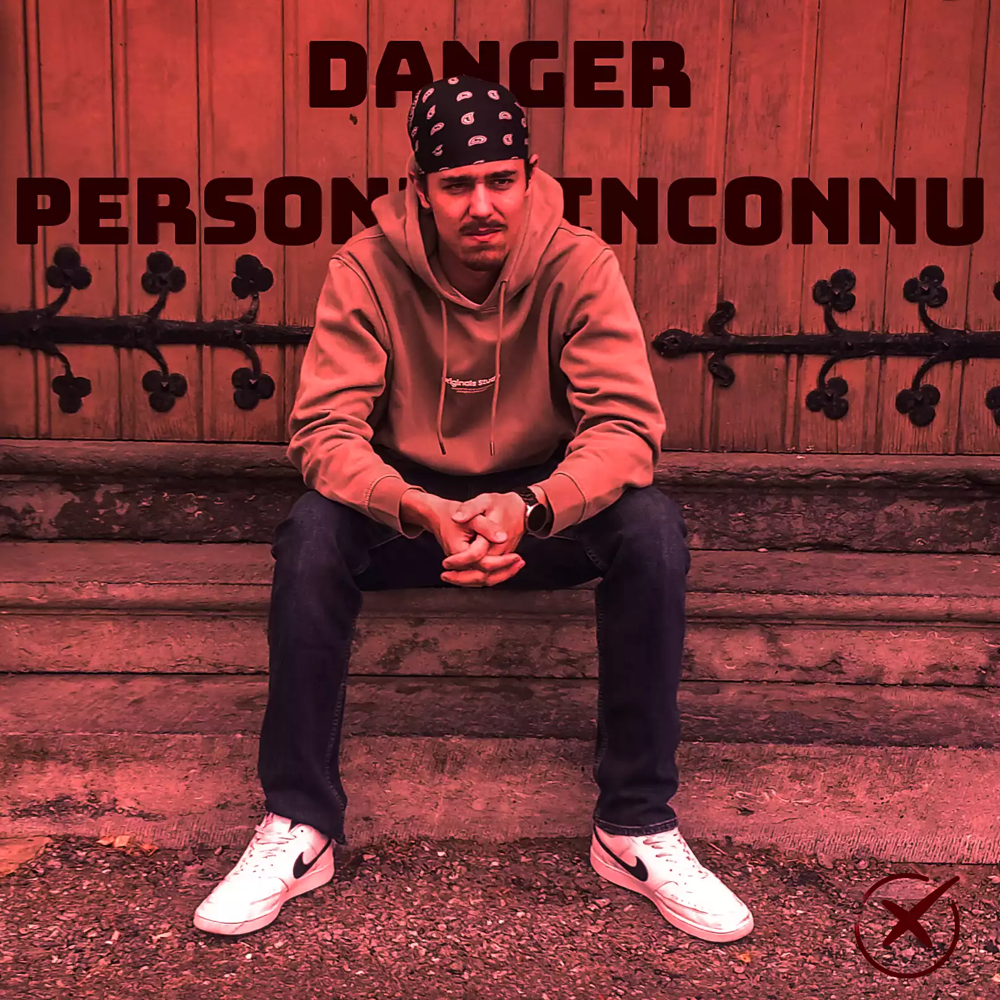
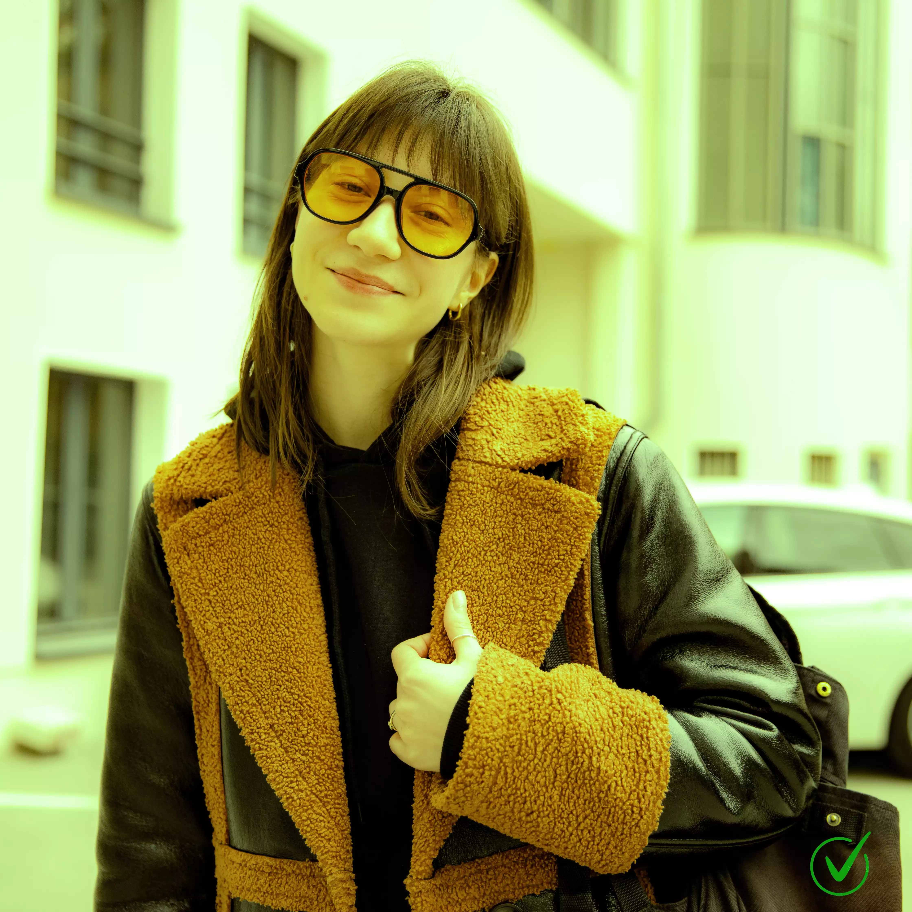

Est-ce que vous rêvez de faire des rencontres parfaites ?
Si vous rêvez d’un monde où faire des rencontres quasi parfaites dès le début, en connaissant les passions de l’autre et vos points communs. Un monde où vous ne parlez qu’avec des personnes avec qui vous avez une parfaite compatibilité...
Les lunettes « Lunas » sont là pour créer cette réalité.
Lunas veut vous aider à tisser des liens avec les personnes que vous croisez au quotidien.
N’ayez plus peur de l’inconnu.


Grâce à Lunas, les rencontres autrefois angoissantes sont maintenant faciles et prévisibles. Puisque vous savez tout sur la personne face à vous, n’ayez plus peur de franchir le pas, car avec Lunas :
- Plus de doutes : vous connaissez déjà les sujets qui vont plaire.
- Plus de rejet : l'algorithme a déjà validé votre compatibilité.
- Plus de perte de temps : vous allez droit vers les personnes qui vous ressemblent.